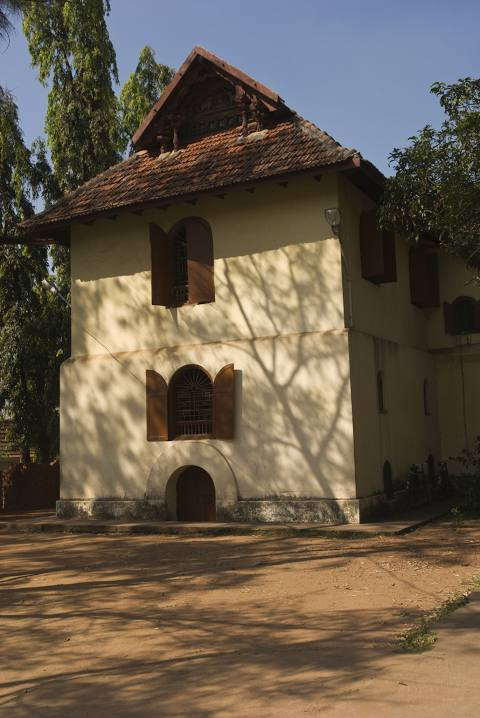
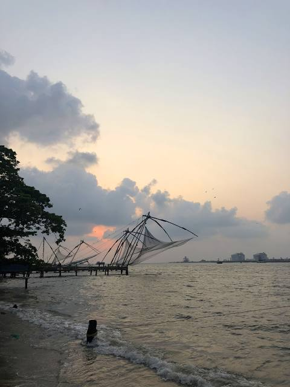

Mattancherry Palace
The Mattancherry Palace is a Portuguese palace popularly known as the Dutch Palace, in Mattancherry, Kochi, in the Indian state of Kerala which features Kerala murals depicting portraits and exhibits of the Rajas of Kochi. The palace was included in the "tentative list" of UNESCO World Heritage Site.
Paradesi Synagogue
The Paradesi Synagogue aka Cochin Jewish Synagogue or the Mattancherry Synagogue is a synagogue located in Mattancherry Jew Town, a suburb of the city of Kochi, Kerala, in India. It was built in 1568 A.D. by Samuel Castiel, David Belila, and Joseph Levi for the flourishing Paradesi Jewish community in Kochi.
Saint Francis Church

Saint Francis Church, in Fort Kochi, Kochi, originally built in 1503, is one of the oldest European churches in India and has great historical significance as a mute witness to the European colonial struggle in the subcontinent. The Portuguese explorer Vasco da Gama died in Kochi in 1524 when he was on his third visit to India.
Fort Kochi Beach
Fort Kochi beach is a beach along the Arabian Sea situated in Fort Kochi in the city of Kochi in South India, Kerala state.